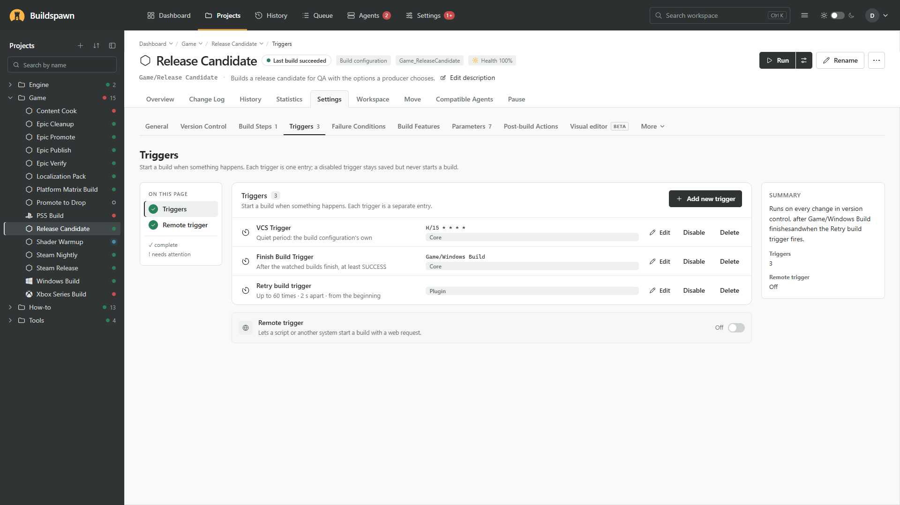

Triggers
Triggers start builds on their own: when code changes, on a schedule, or when another build finishes.
Each build configuration has its triggers on Settings › Triggers. A build configuration can have several triggers. Each is a separate entry that you can edit, disable, enable or delete. A disabled trigger stays saved but never starts a build.

Add a trigger
- Open the build configuration and go to Settings › Triggers.
- Click Add new trigger. The list shows only the kinds that work for this build configuration. A kind that is already on it says so, and you edit it instead of adding it twice.
- Click Add next to the kind and fill in its settings.
- Click Save.
On the Triggers page each row has Edit, Disable or Enable, and Delete. Changing triggers needs the Configure permission. The summary on the right says in one sentence what starts a build, for example Runs every day at 02:00 and after Game/Windows Build finishes.
When a build configuration or its project is paused, no trigger starts a build. People can still start builds by hand.
The trigger types
| Trigger | Starts a build when |
|---|---|
| VCS Trigger | Someone commits or submits a change to a root. |
| Schedule Trigger | The time matches a schedule. |
| Finish Build Trigger | A watched build configuration finishes a build. |
| Retry build trigger | A build of this configuration fails. |
| P4 triggered build. | The Perforce server calls Buildspawn after a submit. |
| Perforce root: build when the Perforce server triggers it | The same, for a build configuration on a Perforce root. |
| Perforce shelve trigger | A new shelf matches your keyword, pattern or users. |
| Remote trigger | A script sends a web request with a token. |
Core triggers show a Core chip and those that come from a plugin show Plugin. The VCS, Schedule and Finish Build triggers have a plain form. The others bring their own form, or say This trigger has no settings and show what to set up on the other side.
A project that indexes branches has one more trigger, Periodically if not otherwise run, with an Interval (default 1d; also 5m, 2h, 7d). It runs an index if none ran within that time. It belongs to the project, not to a build configuration.
Parameters and triggers
A trigger starts a build with the default values of its parameters. The rules of each parameter still count: a value that breaks them is refused. To start with other values, use the remote trigger with buildWithParameters, the shelve trigger's Parameters, or reverse.dep values.
Triggers from projects and templates
Triggers can come from a template or a project. Inherited triggers show where they come from, and you can override, disable or reset them on the build configuration, as with parameters.